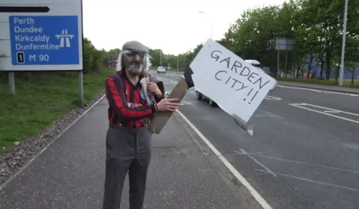
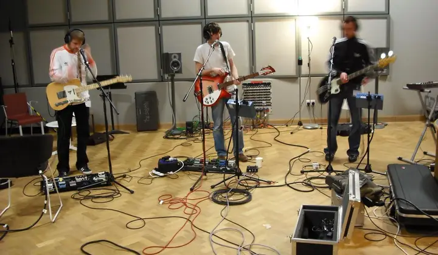
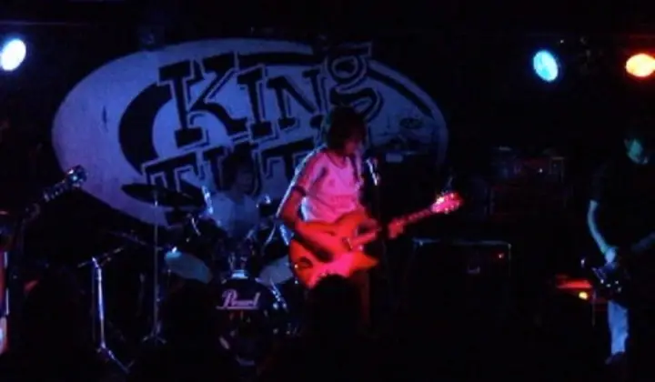
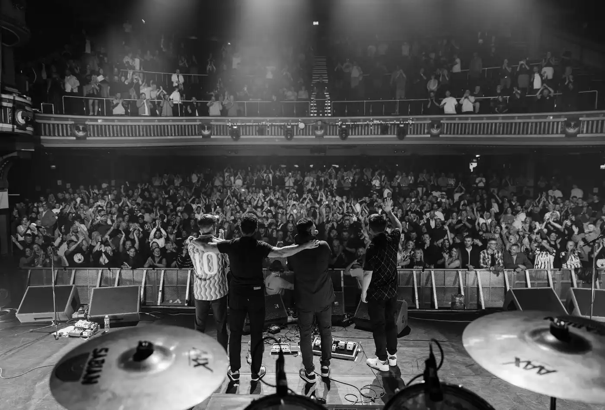

From the shed
to the Alhambra

The shed in Rosyth
Brothers Fraser and Craig Penman, Gec Livingstone and Gaz Louch start a band in a soundproofed shed at the bottom of the Penman family garden.

First gig
The Yard, Rosyth, May 2005. The banner was homemade. The noise was not small.

Garden City
The first EP, recorded in that garden hut. It gets them to Alan McGee's Death Disco at Notting Hill Arts Club and the Cavern Club in Liverpool.

EMI, London
Three tracks recorded at EMI's London studios. A sold-out London show supporting Louis XIV, and a tip as a band to watch in 2007.

Austin, Texas
South by Southwest, 14 to 18 March. From the shed to one of the world's biggest music festivals. Then T in the Park.

The 'final' gig
Fraser takes a job offshore. Around 1,000 people pack Alhambra 2 in Dunfermline to say goodbye. It doesn't stick.

Back again
A year later they're back, with the 2point1 EP and a big night at Velocity.

Five-piece
Cal Nicol joins on keys. Heart Attack lands, and the band plays the T Break stage at T in the Park on Saturday 10 July.

Should've Known Better
The debut album, out 2 April 2012 on Townsend Records. It makes the Official Scottish Albums Chart.

Save the Pars
After a year off, the band reunites for fundraising gigs at PJ Molloys to help save Dunfermline Athletic.

Garden City, at last
Twenty years after that first EP, Garden City finally gets a proper release on 18 September 2026.

Back at the Alhambra
Saturday 3 October 2026. The first hometown show in 11 years. Sold out.